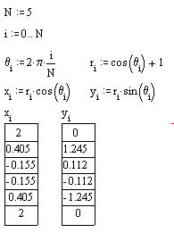
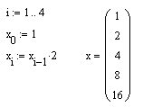

Calculating with Arrays |
Once you define an array, you can use it in some operations, such as addition, just like other variables. To add two matrices, simply type M1 + M2 (the matrices must be of the same size), as you would with scalars. If array mathematics employ a different definition for an operator, as with multiplication, the type of argument specifies how the operator works, assuming appropriate definitions for scalars, vectors, and matrices. There are also some operators that are specific to array calculations.
There are a variety of functions for performing typical array calculations. There are also transform functions, for signal processing on vectors, and solving functions for systems of equations. Array expressions can also be evaluated symbolically.
| Iteration and Data Creation |
In addition to typical linear algebra calculations, arrays in Mathcad
are useful for performing calculations repeatedly over a range of values.
Suppose you want to create data for points on the polar curve
| Using range variables: | Using vectors: |
|
 |
The vector gives you two reusable columns of data, whereas the range variable gives you only the displayed values. The vectors x and y can be reused for subsequent calculations, parametric fitting, graphing, and so on. Note that some functions and operators, unlike the sine, cosine and multiplication functions above, don't accept vector arguments. In those cases, you can use the vectorize operator to specify that the same calculation should be performed on every element in the array.
You can iterate over an expression using program loops as well, but such a calculation likely involves the creation of arrays inside the program.
You can calculate seeded difference equations using the same construction by defining the starting element of a vector and generating the rest from that value.
